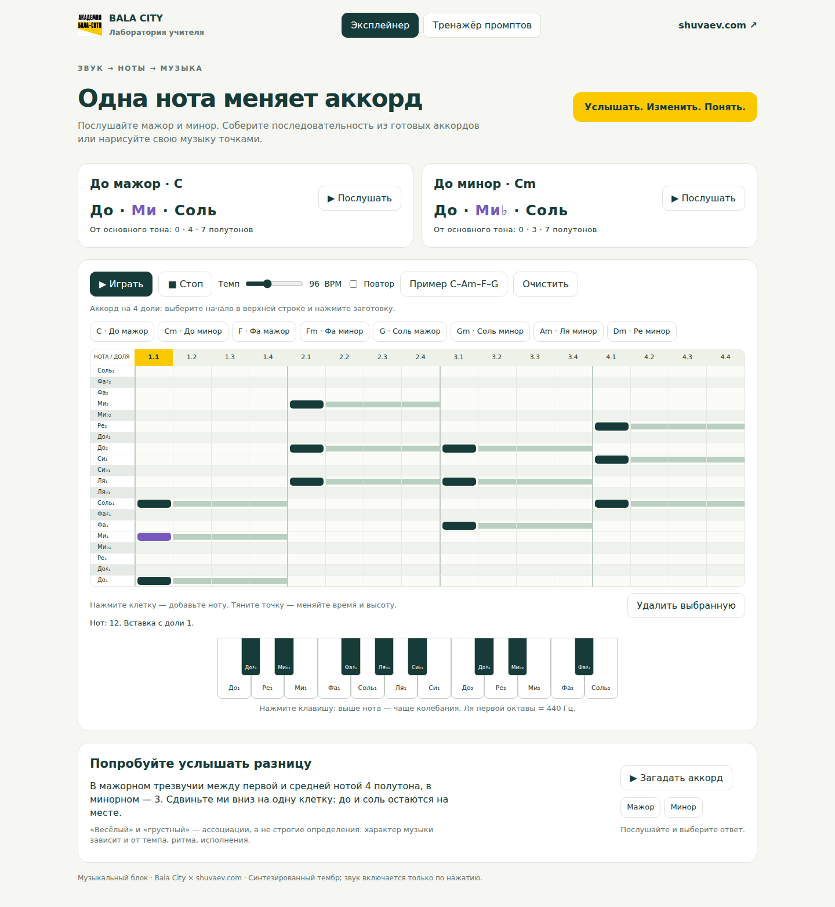

Готовый запрос для DeepSeek
Сделайте такой интерактивный тренажёр сами
Скопируйте запрос, отправьте модели и сохраните её ответ как HTML-файл. Откройте файл в браузере.
Добавь все 24 мажорных и минорных трезвучия от 12 хроматических нот, включая E и Em. На каждой кнопке буквенное и русское название: E · Ми мажор, Em · Ми минор. B означает Си.
Создай один автономный HTML-файл на русском для урока музыки: интерактивное пианино и редактор нот в виде сетки. Горизонталь — 16 долей (4 такта по 4), вертикаль — высота звука с названиями нот и полутонами. Клик добавляет ноту, перетаскивание меняет высоту и время; нужна кнопка удаления выбранной ноты и очистки всей сетки. Дай заготовки C, Cm, F, Fm, G, Gm, Am, Dm. Нажатие вставляет трезвучие длительностью 4 доли в выбранную позицию. Включи пример C–Am–F–G, воспроизведение по времени, стоп, темп и повтор. Ноты одной вертикали звучат одновременно, разных долей — последовательно. Звук синтезируй через Web Audio после действия пользователя, без внешних библиотек. Сравни C (до–ми–соль, 0–4–7 полутонов) и Cm (до–ми♭–соль, 0–3–7), объясни изменение средней ноты. Добавь мини-задание на слух с проверкой ответа. Интерфейс должен работать мышью и касанием, а выбранная нота — перемещаться стрелками. Не запускай звук при открытии страницы.
Что получится

Проверка результата
1. C и Cm отличаются только средней нотой.
2. В одной колонке ноты звучат вместе.
3. После «Стоп» звук сразу прекращается.
4. Точки перемещаются мышью и пальцем.
5. После очистки можно собрать новую мелодию.
Результат модели может отличаться. Если проверка не прошла, опишите конкретную ошибку и попросите исправить её.
Открыть слайды с промптом и скриншотами →